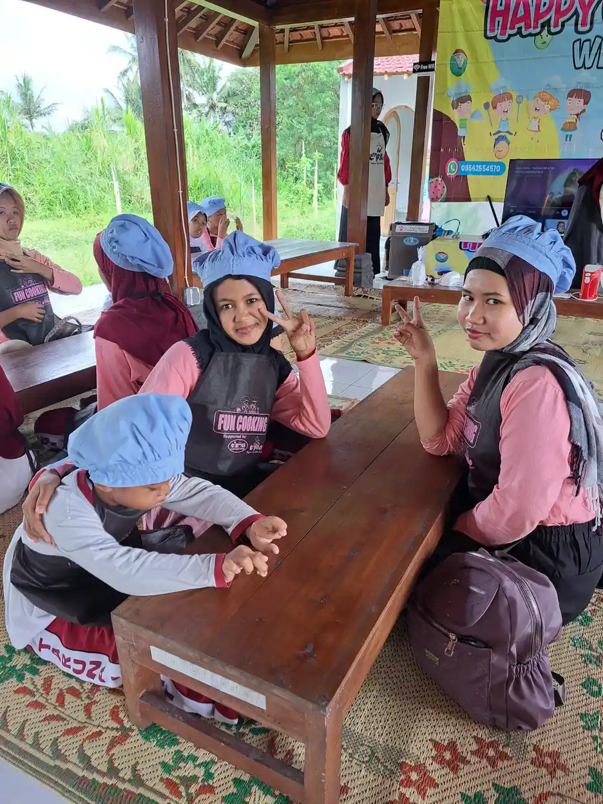
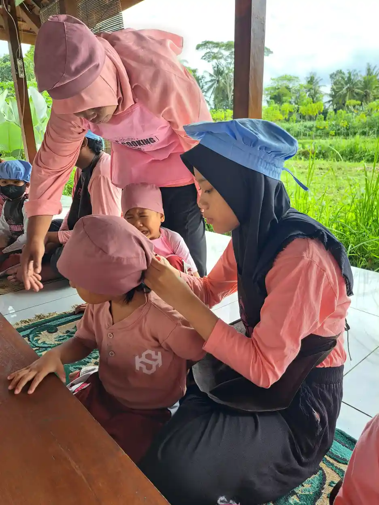

Jawaban singkat: UU No. 19 Tahun 2011 adalah Undang-Undang tentang Pengesahan Convention on the Rights of Persons with Disabilities, dalam bahasa Indonesia disebut Konvensi Mengenai Hak-Hak Penyandang Disabilitas. Jadi, ini bukan UU tentang anak. Namun, isinya penting bagi anak penyandang disabilitas karena menegaskan hak, kesetaraan, aksesibilitas, pendidikan inklusif, kesehatan, rehabilitasi, dan partisipasi.
Daftar isi
Identitas UU No. 19 Tahun 2011
Menurut Database Peraturan BPK, judul resminya adalah Undang-Undang Nomor 19 Tahun 2011 tentang Pengesahan Convention on the Rights of Persons with Disabilities (Konvensi Mengenai Hak-Hak Penyandang Disabilitas). Peraturan ini ditetapkan dan diundangkan pada 10 November 2011, berstatus berlaku, dan menjadi dasar pengesahan konvensi tersebut di Indonesia.
Istilah “pengesahan” berarti Indonesia menyatakan persetujuan untuk terikat pada instrumen internasional yang disahkan. Karena itu, saat menjelaskan UU ini, kita perlu membedakannya dari UU 23/2002 atau UU 35/2014 tentang Perlindungan Anak. Ketiganya bisa relevan dalam satu kasus, tetapi bukan peraturan yang sama.
Apa itu Convention on the Rights of Persons with Disabilities?
CRPD adalah konvensi Perserikatan Bangsa-Bangsa tentang hak penyandang disabilitas. Tujuannya memajukan, melindungi, dan menjamin penikmatan penuh serta setara atas hak asasi dan kebebasan fundamental, sekaligus menghormati martabat yang melekat pada setiap penyandang disabilitas. Naskah JDIH Kemenkeu juga menjelaskan kewajiban negara untuk menyesuaikan peraturan, kebijakan, administrasi, dan praktik yang diskriminatif.
Kerangka CRPD menggeser cara pandang dari “anak harus menyesuaikan diri dengan sistem” menjadi “sistem perlu menghilangkan hambatan agar anak dapat berpartisipasi”. Hambatan dapat berbentuk tangga tanpa akses, materi belajar yang tidak tersedia dalam format yang dapat diakses, sikap merendahkan, prosedur layanan yang tidak fleksibel, atau ketiadaan dukungan yang wajar.
Hak yang relevan bagi anak penyandang disabilitas
UU 19/2011 tidak menyajikan daftar layanan sekolah dalam format checklist harian. Manfaatnya adalah memberi prinsip dan kerangka hak yang kemudian perlu diwujudkan melalui peraturan nasional dan kebijakan layanan. Beberapa bagian CRPD yang paling dekat dengan kehidupan anak meliputi:
- Kesetaraan dan nondiskriminasi: kondisi disabilitas tidak boleh menjadi alasan untuk merendahkan, mengucilkan, atau menutup akses terhadap layanan.
- Aksesibilitas: lingkungan fisik, transportasi, informasi, komunikasi, teknologi, dan layanan publik perlu dapat digunakan secara setara.
- Pendidikan: negara perlu menjamin sistem pendidikan inklusif pada semua tingkatan, dukungan individual, dan kesempatan belajar tanpa diskriminasi.
- Kesehatan dan rehabilitasi: anak berhak mendapat akses layanan kesehatan serta habilitasi dan rehabilitasi yang mendukung kemandirian dan partisipasinya.
- Perlindungan dari kekerasan: anak penyandang disabilitas tetap memiliki hak atas integritas fisik dan mental serta perlindungan dari eksploitasi, kekerasan, dan perlakuan semena-mena.
- Partisipasi: pendapat anak perlu didengar sesuai usia dan kematangannya, terutama dalam keputusan yang memengaruhi kehidupan sehari-hari.
Contoh penerapan di rumah dan sekolah

Prinsip di atas tidak otomatis berarti setiap anak menerima bentuk dukungan yang sama. Kebutuhan anak perlu dikenali, dibicarakan dengan keluarga, dan bila perlu dinilai oleh tenaga profesional. Contoh penyesuaian yang mungkin dibahas dengan sekolah adalah instruksi visual, waktu tambahan, tempat duduk yang mengurangi gangguan, alat bantu komunikasi, akses fisik, atau pendampingan pada aktivitas tertentu.
Untuk konteks Indonesia, orang tua dapat membaca UU 8/2016 tentang Penyandang Disabilitas dan PP 13/2020 tentang Akomodasi yang Layak. Dua aturan tersebut membantu menerjemahkan prinsip hak menjadi mekanisme yang lebih dekat dengan pendidikan dan layanan publik. Jangan mengutip UU 19/2011 sebagai seolah-olah ia memuat semua prosedur sekolah.

Langkah orang tua saat layanan belum aksesibel
- Catat kebutuhan dan hambatan secara konkret. Tulis aktivitas yang sulit dilakukan, kapan terjadi, dukungan yang sudah dicoba, dan dampaknya pada keselamatan atau partisipasi anak.
- Mulai dari komunikasi tertulis. Sampaikan kebutuhan kepada guru, wali kelas, kepala sekolah, atau penyedia layanan. Minta pembahasan solusi dan tenggat tindak lanjut.
- Gunakan istilah yang tepat. Jelaskan kebutuhan akses dan akomodasi, bukan hanya label diagnosis. Sertakan rekomendasi profesional bila tersedia.
- Naikkan ke instansi terkait bila perlu. Untuk pendidikan, orang tua dapat meminta pendampingan dinas pendidikan atau Unit Layanan Disabilitas sesuai kewenangan daerah. Untuk layanan lain, tanyakan kanal pengaduan resmi penyelenggara.
- Cari bantuan profesional. Pada kasus diskriminasi serius, kekerasan, atau sengketa hukum, pertimbangkan konsultasi dengan lembaga bantuan hukum atau pendamping disabilitas.
Pertanyaan yang sering diajukan
UU No. 19 Tahun 2011 tentang apa?
UU Nomor 19 Tahun 2011 adalah undang-undang tentang pengesahan Convention on the Rights of Persons with Disabilities atau Konvensi Mengenai Hak-Hak Penyandang Disabilitas, bukan undang-undang khusus tentang perlindungan anak.
Apa dampaknya bagi anak penyandang disabilitas?
Konvensi yang disahkan menegaskan prinsip kesetaraan, nondiskriminasi, aksesibilitas, pendidikan inklusif, kesehatan, habilitasi dan rehabilitasi, serta partisipasi. Pelaksanaannya perlu dibaca bersama peraturan nasional lain, terutama UU 8/2016 dan PP 13/2020.
Apakah UU ini sama dengan UU Perlindungan Anak?
Tidak. UU 19/2011 meratifikasi CRPD. UU Perlindungan Anak dan UU 8/2016 memiliki cakupan serta ketentuan berbeda, meskipun dapat saling berkaitan dalam perlindungan hak anak penyandang disabilitas.